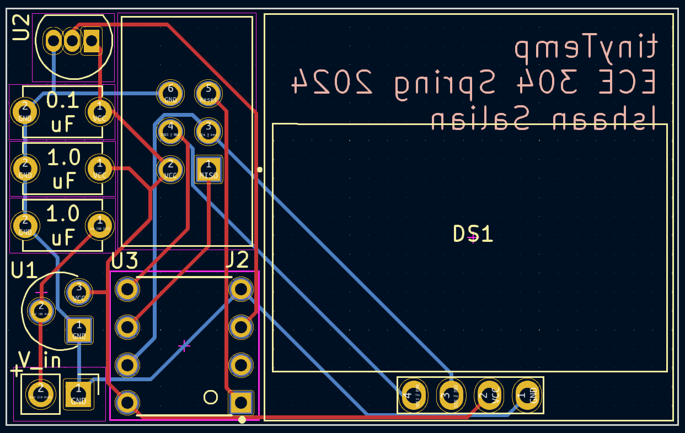
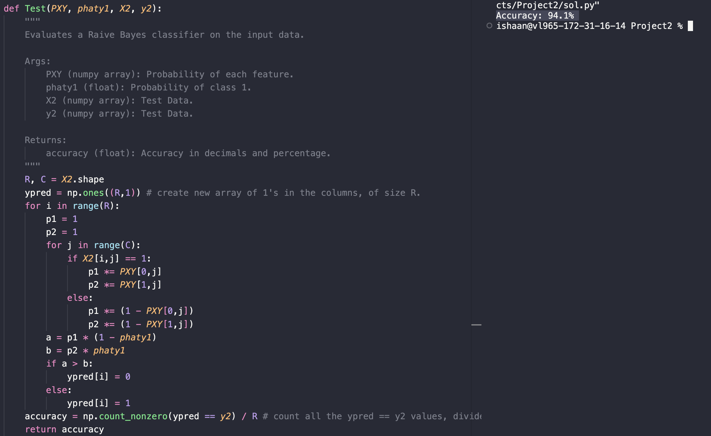
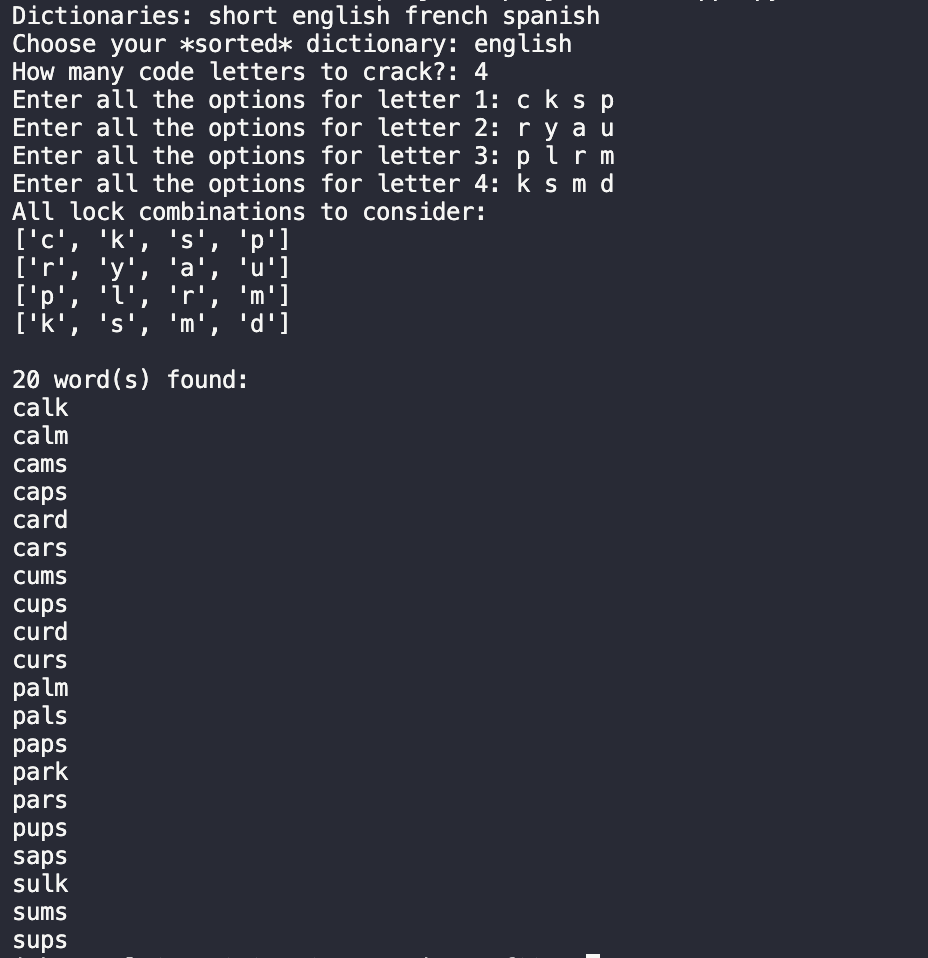

Designed a compact PCB using KiCad, achieving a 33% size reduction with a compact 2 sq. inches design.
Implemented power-saving algorithms in embedded C by sampling temperature values only when necessary.
Built the project at 76% of the cost requirements, demonstrating effective cost management and resource optimization.
PCB Layout:

- -
TravelTime, Real-time Bus Information Display
Description:
Developed a system that displays transit information by utilizing public transit API.
Integrated Arduino Mega and ESP8266 using serial communication for real-time bus updates.
Implemented 7-segment displays for timings and an LCD screen for clear presentation of bus information.
Links:
2023
keyRING, A Smart Key Holder
Description:
Designed a system for sensing keys using a spring-like mechanical switch and sonar sensor for door movement.
Programmed the ATmega328P using C to communicate with the switch for key detection using interrupts.
Awarded “Cheapest Hardware Hack” for a cost-effective design while achieving project goals.
Links:
- -
Digital Thermometer System
Description:
Created a digital thermometer using an Arduino Uno microcontroller, TMP36 temperature sensor, and a 7-segment display.
Developed a program in embedded C to display temperature readings in degrees Celsius or Fahrenheit, based on the position of a push-button switch.
Implemented a seven segment display to display temperature to 3 significant figures with a precision of 0.1 degrees, followed by the letter C or F.
- -
Ultrasound-based Distance Measurement System
Description:
Utilized the HC-SR04 ultrasound sensor to measure object distances ranging from 5 cm to 200 cm and implemented the system using an embedded system design, making it compact and portable for various applications.
Programmed the ATmega328P MCU on an Arduino Uno using Embedded C to calculate object distances based on the time taken by ultrasound waves to bounce back from objects.
Integrated a 0.96" OLED display with a resolution of 128x64 pixels to display distance measurements in both centimeters and inches, achieving an accuracy of 1 cm in distance measurements.
Conducted rigorous testing of the system for functionality and performance, ensuring that it met project specifications and requirements.
- -
Email Spam Detection

Description:
Developed a spam email classifier using Python and Naive Bayes algorithm.
Trained the model on a dataset of labeled spam and non-spam emails.
Successfully applied the trained model to classify new, unseen emails.
Achieved an accuracy of 94.1% in classifying spam emails.
- -
HR Sorter for Resumes
Description:
Developed a bash script, "HR_sorter," to automate the ordering of resumes based on predefined keywords and weights.
Implemented the solution using bash scripting, utilizing a limited set of external programs, including ls, echo, awk, cat, grep, sort, wc, bc, and rm, as specified in project requirements.
Showcased proficiency in Unix/Linux command-line tools, shell scripting, and the utilization of various external programs to accomplish project objectives.
Successfully sorted resumes based on keywords and weights, demonstrating the effectiveness of the script in automating the sorting process.
2022
Decoding a Baseball's Flight Path
Description:
Analyzed the flight of a baseball numerical techniques to determine key parameters using MATLAB.
Developed and validated a numerical method to compute the trajectory of the baseball, and compared the results to analytic solutions.
Identified the impact of air resistance on the baseball's trajectory and included drag, as efficiently as possible.
Visualized results using MATLAB to create an informative plot of the baseball's trajectory.
- -
Designing an Efficient Database

Description:
Designed an efficient dictionary database in Python.
Implemented various simple sorting and searching algorithms.
Created a variety of useful applications such as: searching a word, spell checking a text, finding anagrams of a word, creating a scrabble helper tool, and cracking a code locker.
- -
Building a Movie Library
Description:
Designed and operated a movie library using both lists and binary search trees in Python.
By using a binary search tree, I was able to store an large number of movies while maintaining fast insert and search times.
Created a robust search functionality that allowed users to extract a customized sublist or subtree from the vast movie database.
- -
KIM-1 Servo-Based Valve Control Project
Description:
Developed a servo-based opening and closing valve system for a KIM-1 (6502-based single-board computer), enhancing functionality and automation capabilities.
Acquired proficiency in assembly language programming through hands-on experience with the KIM-1 platform.
Applied theoretical knowledge of control systems to design and implement precise servo motor control algorithms.